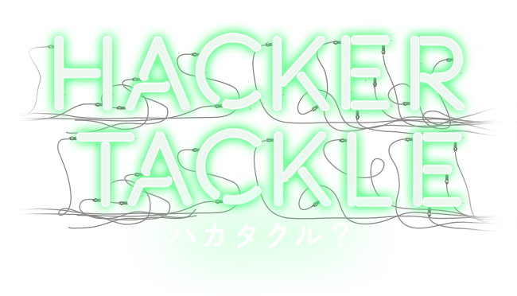

あらゆるプログラマのためのコミュニティイベント
2016.09.10 PM13:00-18:30
福岡県Ruby・コンテンツ産業振興センター
参加登録福岡のあらゆるプログラマのためのコミュニティイベント
2016.09.10 PM13:00-18:30
福岡県Ruby・コンテンツ産業振興センター
参加登録HackerTackleは、プログラマのための総合技術イベントです。 「ハッカー・タックル/博多・来る」の意味を持つイベント名には、多くのハッカーが博多に来て、さまざまな議論をぶつけあう場になればいいという思いがこめられています。 イマのプログラマにとって必要な知識を切り取った、さまざまな技術に関するセッションを用意しています。 ぜひ博多に来て、
HackerTackleは、プログラマのための総合技術イベントです。 「ハッカー・タックル/博多・来る」の意味を持つイベント名には、多くのハッカーが博多に来て、さまざまな議論をぶつけあう場になればいいという思いがこめられています。 イマのプログラマにとって必要な知識として、プログラミング言語をはじめとしてさまざまな技術に関するセッションを用意しています。 ぜひ